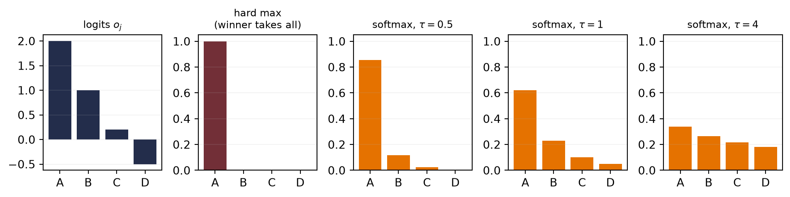

import torch
import matplotlib.pyplot as plt
# [1]
o = torch.linspace(-6, 6, 300)
sigmoid_response = torch.sigmoid(o)2 Linear Models that Classify: Logistic and Softmax
Regression predicts numbers; most of what the world wants predicted is categories — cat or dog, spam or not, which of ten digits. This chapter converts the linear machinery of Chapter 1 into a classifier without discarding a single idea: the same weighted sums, the same maximum-likelihood recipe for the loss, the same gradient descent. What changes is one squashing function at the output, and it changes less than you might think.
2.1 What actually changes
Return to the computation circuit in Figure 1.7. Keep every weighted input and the bias, but now call the circuit’s output a raw score \(o\). Classification adds one operation after that score; the weighted-sum machinery itself stays intact.
In regression, \(y \in \R\) and the Gaussian noise model handed us the MSE (Chapter 1). In classification, \(y\) is a label from \(\{0, \dots, K-1\}\). Could we just regress onto the labels with MSE anyway? We could, and it fails for a principled reason: the loss is a noise model, and Gaussian is the wrong model for a coin flip. A binary outcome deviates from its probability like a Bernoulli variable, not like additive Gaussian noise \(\rightarrow\) maximum likelihood demands a different loss. Everything in this chapter falls out of taking that seriously.
What we need is two things:
- a way to turn the model’s raw score (its logit, \(o \in \R\)) into a probability,
- a loss that measures how wrong a probability is.
2.2 Binary classification
From score to probability: the sigmoid
Our linear model produces \(o = \vect{w}^\top\vect{x} + b\), an unbounded score. The sigmoid squashes it into a probability:
\[ \sigma(o) = \frac{1}{1 + e^{-o}} . \tag{2.1}\]
- Evaluate the sigmoid across a range of logits.

Notice what did not change: the decision boundary \(\hat{p} = \tfrac{1}{2}\) is exactly \(o = 0\), i.e. \(\vect{w}^\top\vect{x} + b = 0\) — the same hyperplane geometry from Chapter 1, with \(\vect{w}\) still the template the input is scored against. The sigmoid does not bend the boundary; it grades our confidence on either side of it.
The loss: cross-entropy from maximum likelihood
Run the maximum-likelihood recipe with the correct noise model. If the label is a coin flip with \(P(y{=}1 \mid \vect{x}) = \hat{p}\), the likelihood of the dataset is \(\prod_i \hat{p}_i^{\,y_i}(1-\hat{p}_i)^{1-y_i}\); taking the negative log gives the binary cross-entropy:
\[ \loss_{\text{BCE}} = -\bigl[\, y \log \hat{p} + (1 - y)\log(1 - \hat{p}) \,\bigr]. \tag{2.2}\]
Read it as surprise: if the true label is 1, the loss is \(-\log \hat{p}\) — small when the model believed in the outcome, exploding as the model’s belief goes to zero. A confident wrong answer is punished without mercy, which is exactly the pressure a probability deserves.
The beautiful gradient
Chain the sigmoid into the cross-entropy and differentiate with respect to the logit, and something remarkable drops out (Exercise 1 walks you through it):
\[ \frac{\partial \loss}{\partial o} = \hat{p} - y . \tag{2.3}\]
The gradient is literally the prediction error, the same form MSE gave us for regression. All the logs and exponentials annihilate each other. This is not luck, and it is not the last time you will see it.
2.3 Multiclass classification: softmax
With \(K\) classes, run \(K\) templates at once: \(\matr{W} \in \R^{K \times d}\) produces a score vector \(\vect{o} = \matr{W}\vect{x} + \vect{b}\), one logit per class. To turn \(K\) scores into a probability distribution, exponentiate (making everything positive) and normalize:
\[ \hat{y}_j = \mathrm{softmax}(\vect{o})_j = \frac{e^{o_j}}{\sum_{k=1}^{K} e^{o_k}} . \tag{2.4}\]
Softmax has three properties worth committing to memory: every output is positive, the outputs sum to one, and — less obviously — it is invariant to constant shifts: adding the same \(c\) to every logit changes nothing, because \(e^{o_j + c} = e^c e^{o_j}\) and the \(e^c\) cancels top and bottom. Only the differences between scores matter.
- Compare softmax probabilities before and after a common logit shift.
# [1]
logits = torch.tensor([2.0, 0.5, -1.0, 1.0])
softmax_cases = [(shift, torch.softmax(logits + shift, dim=0))
for shift in (0.0, 100.0)]
TipRemember this machine: scores \(\rightarrow\) weights
Step back from classification for a moment. What softmax really is: a differentiable device that takes any list of scores and returns positive weights that sum to one, favoring the large scores without silencing the small ones. Today the scores are class logits. Much later, we will score how well one current request matches several stored candidates, then use the resulting weights to blend what those candidates contain. For now, keep only the reusable machine: scores \(\rightarrow\) positive weights that sum to one. One normalizer, the whole book long.
NoteWhat “differentiable” buys us — softening the hard
That word differentiable deserves a moment in the light, because it names one of the great design patterns of this field.
Consider the obvious way to pick a class: take the argmax, then output a one-hot vector with 1 at the winning index and 0 elsewhere. (The scalar max operation is different and does have a gradient through its winning input.) Argmax-plus-one-hot is hard: nudge a losing logit slightly and the output does not move at all; nudge it past the winner and the output jumps all at once. Its derivative is zero almost everywhere, so the output gives gradient descent no local hint about which losing score should move or by how much. Chapter 5 will formalize how such local derivatives combine across many layers; for now, zero means there is no useful direction to follow.
Softmax is a smooth relaxation of that one-hot selection; the name is literal: a soft max. Instead of crowning one winner, it distributes belief according to the scores, and now every logit can affect the loss. We gave up a little decisiveness and bought trainability.
Watch for this move; it is everywhere once you see it. Whenever a useful operation is hard — a lookup, a yes/no choice, even sorting a list (yes, researchers have built differentiable sorting!) — the play is the same: replace it with a smooth version, train, and sharpen later if needed. The one to remember for this book is a hard memory lookup: one address wins and every other row is ignored. In Part IV we will replace that single address with a weighted read from several candidates.
- Compare one hard selection with three temperature-softened distributions.
# [1]
logits_demo = torch.tensor([2.0, 1.0, 0.2, -0.5])
klasses = ["A", "B", "C", "D"]
hard = torch.zeros(4); hard[logits_demo.argmax()] = 1.0
temperatures = [0.5, 1.0, 4.0]
soft_cases = [torch.softmax(logits_demo / temp, dim=0) for temp in temperatures]
Cross-entropy, multiclass edition
With one-hot labels \(\vect{y}\) (all zeros except a 1 at the true class), the cross-entropy is
\[ \loss_{\text{CE}} = -\sum_{j=1}^{K} y_j \log \hat{y}_j = -\log \hat{y}_{\text{true class}}, \tag{2.5}\]
the surprise at the true class, again. And the gradient repeats its trick:
\[ \frac{\partial \loss}{\partial o_j} = \hat{y}_j - y_j , \tag{2.6}\]
prediction minus target, one more time. This recurrence is no coincidence — sigmoid/BCE and softmax/CE are both members of the exponential family paired with their natural losses, and that pairing always collapses the gradient to the error.
NoteThe information-theory reading
Entropy \(H[P] = -\sum_j p_j \log p_j\) measures the uncertainty in a distribution; cross-entropy \(H(P, Q) = -\sum_j p_j \log q_j\) is the cost of encoding outcomes from \(P\) using codes built for \(Q\). Minimizing our loss is minimizing that encoding cost — equivalently, maximizing the likelihood assigned to the observed labels. Probability and coding give two readings of the same objective. A later chapter will give the remaining mismatch term its own name, when we have a reason to compare whole distributions rather than one-hot labels.
One numerical landmine
Computing \(e^{o_j}\) overflows once a logit reaches the high eighties in float32 (about 700 in float64) — scales training easily produces. The fix exploits shift invariance: subtract the max logit before exponentiating (the log-sum-exp trick), which changes nothing mathematically and everything numerically. We will use it in the code below; the deeper story of floating-point limits lives in Appendix C.
2.4 Build it: three classes, from scratch
Now we assemble the full classifier on three Gaussian blobs. It has four pieces, all of which you have already met: three templates (one per class), the stable softmax, the cross-entropy loss, and the gradient. And since Equation 2.6 reduced that gradient to \(\hat{y} - y\), we can implement it by hand \(\rightarrow\) no autograd needed:
- Prepare the inputs and fixed settings for the example.
- Define the reusable
stable_softmaxhelper. - Apply the softmax cross-entropy gradient to all three templates.
- Report or visualize the measured result.
# [1]
torch.manual_seed(6050)
centers = torch.tensor([[-2.0, 0.0], [2.0, 0.0], [0.0, 2.5]])
X = torch.cat([c + 0.7 * torch.randn(150, 2) for c in centers]) # (450, 2)
y = torch.arange(3).repeat_interleave(150) # (450,)
Y = torch.nn.functional.one_hot(y, 3).float() # (450, 3)
# [2]
def stable_softmax(logits: torch.Tensor) -> torch.Tensor:
z = logits - logits.max(dim=-1, keepdim=True).values # shift invariance at work
e = torch.exp(z)
return e / e.sum(dim=-1, keepdim=True)
W, b = torch.zeros(3, 2), torch.zeros(3)
# [3]
for step in range(400):
P = stable_softmax(X @ W.T + b) # (450, 3) predicted probabilities
G = (P - Y) / len(X) # the beautiful gradient, eq. (6)
W -= 1.0 * G.T @ X # blame out x signal in
b -= 1.0 * G.sum(0)
P = stable_softmax(X @ W.T + b) # evaluate the final updated parameters
ce = -(Y * torch.log(P)).sum(1).mean()
acc = (P.argmax(1) == y).float().mean()
# [4]
print(f"cross-entropy {ce:.3f} accuracy {acc:.1%}")cross-entropy 0.033 accuracy 98.9%- Prepare the inputs and fixed settings for the example.
- Decision regions with confidence shading.
import numpy as np
# [1]
gx, gy = np.meshgrid(np.linspace(-4.5, 4.5, 300), np.linspace(-2.5, 5, 300))
grid = torch.tensor(np.stack([gx.ravel(), gy.ravel()], 1), dtype=torch.float32)
Pg = stable_softmax(grid @ W.T + b)
cls = Pg.argmax(1).reshape(gx.shape).numpy()
conf = Pg.max(1).values.reshape(gx.shape).numpy()
plt.figure(figsize=(6, 4.4))
plt.contourf(gx, gy, cls, levels=[-0.5, 0.5, 1.5, 2.5],
colors=["#DCE6F2", "#FDE3C8", "#E3EEE3"])
plt.contourf(gx, gy, 1 - conf, levels=12, cmap="Greys",
alpha=0.25, antialiased=True)
# [2]
for k, color in enumerate(["#232D4B", "#E57200", "#6B8E6B"]):
plt.scatter(X[y == k, 0], X[y == k, 1], s=8, c=color, label=f"class {k}")
plt.xlabel("$x_1$"); plt.ylabel("$x_2$"); plt.legend(loc="lower right")
plt.tight_layout(); plt.show()
The framework version is two lines, with one trap worth a warning. This loss object is the only new framework tool introduced here: it evaluates logits and labels, while the manual loop above still supplies the gradient. Optimizers and automatic backpropagation remain the previews marked in Chapter 1 until Chapters 4 and 5.
- Prepare the inputs and fixed settings for the example.
- Compare the hand-computed cross-entropy with PyTorch’s fused loss.
# [1]
loss_fn = torch.nn.CrossEntropyLoss()
# [2]
print(f"ours: {ce:.6f} torch: {loss_fn(X @ W.T + b, y):.6f}")ours: 0.033425 torch: 0.033425
WarningLet PyTorch do the logits-to-probabilities conversion
nn.CrossEntropyLoss expects raw logits, and that is a feature, not a quirk: it fuses the softmax and the logarithm internally using the log-sum-exp trick, which is more numerically stable than any softmax-then-log you would write yourself. So the advice is: have your model output logits, hand them straight to the loss, and only apply softmax when you actually need probabilities to report. (The same goes for binary problems: prefer binary_cross_entropy_with_logits over sigmoid-then-BCE.) The classic bug is feeding softmax outputs into CrossEntropyLoss — the model still trains, just badly and silently. If a classifier is mysteriously mediocre, check this first.
NoteCheck yourself
Close the book for one minute and reconstruct the classifier.
- What remains linear before sigmoid or softmax is applied?
- Why does the target distribution determine the negative-log-likelihood loss?
- Why should logits, rather than already normalized probabilities, enter PyTorch’s cross-entropy loss?
2.5 Okay, so — classification is regression plus a normalizer
- The geometry survived: logits are still template similarities \(\vect{w}^\top\vect{x} + b\), boundaries are still hyperplanes. Sigmoid and softmax grade confidence; they do not bend anything.
- The loss came from the noise model, exactly as in Chapter 1: Bernoulli \(\rightarrow\) BCE, categorical \(\rightarrow\) cross-entropy, both read as surprise at the truth.
- The gradient is the error, \(\hat{y} - y\), both times — the exponential-family pairing at work.
- Softmax is a scores-to-weights machine, shift-invariant, numerically tamed by log-sum-exp — and it will return, unchanged, as the normalizer of attention.
Next, we let the templates themselves be built out of other templates: Chapter 3 stacks these linear units — and discovers why a bend between them is not optional.
Sources and further reading
- Cox, “The Regression Analysis of Binary Sequences” (1958) develops the logistic model as a principled tool for binary outcomes.
- Bridle, “Probabilistic Interpretation of Feedforward Classification Network Outputs” (1990) connects normalized exponential outputs to probabilistic multiclass classification.
- Shannon, “A Mathematical Theory of Communication” (1948) is the original source behind the entropy and information vocabulary used to read cross-entropy.
Exercises
- (Pencil.) Derive Equation 2.3: write \(\loss_{\text{BCE}}\) as a function of \(o\) through \(\hat{p} = \sigma(o)\), use \(\sigma'(o) = \sigma(o)(1 - \sigma(o))\), and simplify. Which factors cancel, and why is the result independent of the sigmoid’s saturation?
- (Pencil.) Prove softmax’s shift invariance from Equation 2.4, then explain why subtracting the max logit makes the computation overflow-proof: what is the largest value ever exponentiated?
- (Code.) Temperature: replace
logitswithlogits / Tin the softmax figure for \(T \in \{0.5, 1, 2, 10\}\). Describe what happens to the distribution at both extremes. (Keep this dial in mind — it returns when we scale attention scores in Part IV.) - (Code.) Train the blobs classifier with MSE on one-hot targets instead of cross-entropy (same manual loop; the gradient changes). Compare accuracy and the confidence shading near boundaries. What does the wrong noise model cost?
- (Code.) Move the three blob centers closer together (
0.7 → 1.2noise, or centers at distance 1) and retrain. Where does the confidence shading collapse, and what does the cross-entropy value tell you compared to the accuracy?